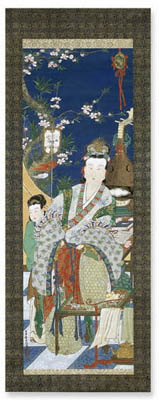

|
research
> projects
Japan
Victor Harris (Keeper Emeritus) and Kazuo Goto have recently edited a joint publication with Asahi Shimbun newspaper and BMP, 'William Gowland, Father of Japanese Archaeology'. See Compass.
Victor Harris has also curated and written the catalogue for our current exhibition, 'Cutting Edge' Japanese Swords in the British Museum'. This is the culmination of the Sword Project, whereby many of the Department's Japanese swords have been polished in Japan with generous financial assistance from the Peter Moores Foundation.
Tim Clark, in association with Dr Ellis Tinios, is researching for the catalogue of Paintings, Prints and Printed Books of the Maruyama-Shijo School. Compass.
Nicole Rousmaniere of the Sainsbury Institute for the Study of Japanese Art and Culture (SISJAC) and Mr Masaaki Arakawa of Idemitsu Museum of arts, Tokyo, are preparing a complete catalogue of our holdings of porcelain.
Islam
Geometry in Islamic Art
The objects in this display demonstrate the use of geometric shapes as decoration across different media of Islamic art. In addition to the arabesque and calligraphy, geometry is one of the three distinct characteristics of Islamic ornament. Used in isolation or in combination, they create a uniquely Islamic form of expression.
Geometric ornament flourished in Islamic art partly because as an alternative to human and animal imagery which were prohibited in religious contexts. The imaginative application of geometric designs derived from a strong mathematical inheritance from Ancient Greece and Rome and 7th-10th- century Islamic advances in mathematics. Artists from Morocco to Southeast Asia decorated buildings, ceramics, metalwork, and manuscripts with elaborate geometric designs, sometimes covering entire surfaces.
The circle, square and triangle form the basis on which Islamic geometric ornament rest. These shapes are repeated and rotated in a seemingly endless arrangement of pattern. The more complex designs often interlace, combining several geometric shapes to suggest infinity and provide texture to otherwise plain surfaces. Tiles in many different geometric shapes decorate interior and exterior walls, covering them with infinite patterns.
Making of the Master
The art of Arabic calligraphy - see pdf
|

| Kanô
Tôrin Yoshinobu, Yang Guifei and Peonies, a triptych of
hanging scroll paintings, Japan, Edo period, AD 1781-1820.
|
|